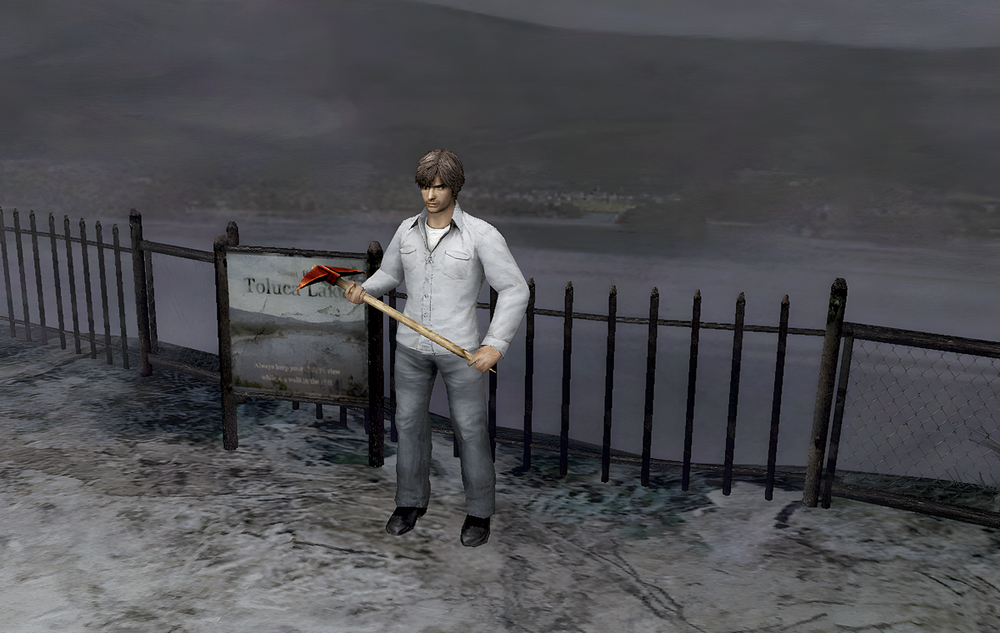
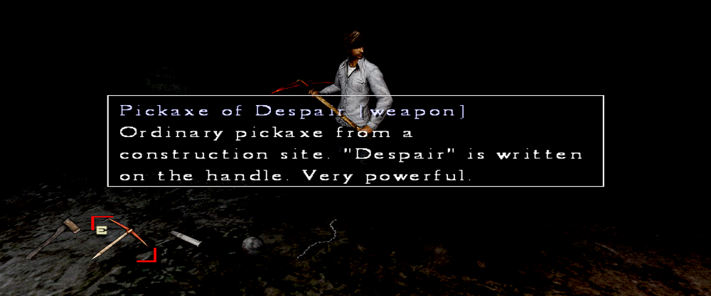
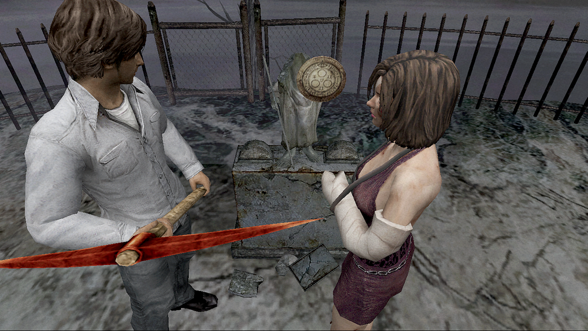
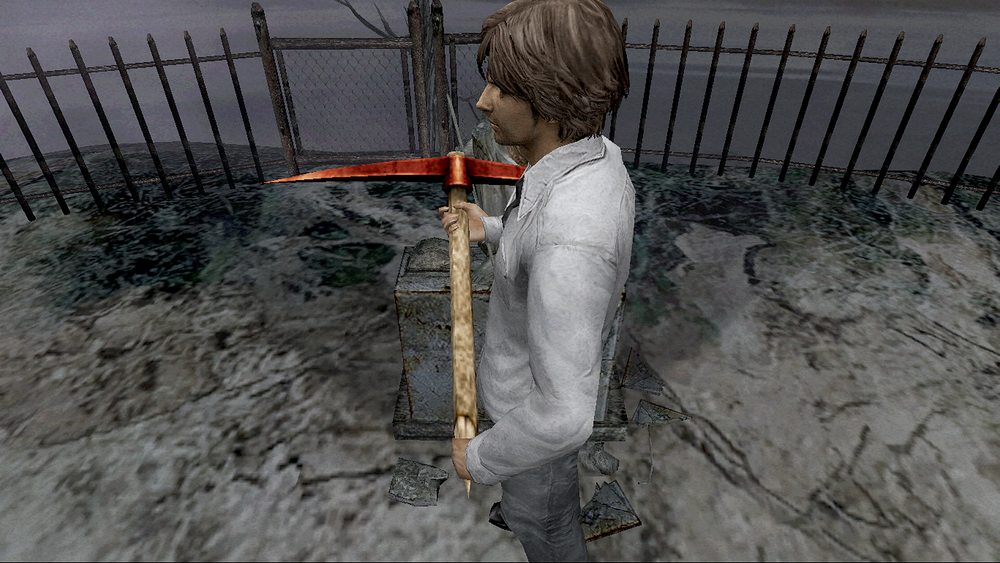
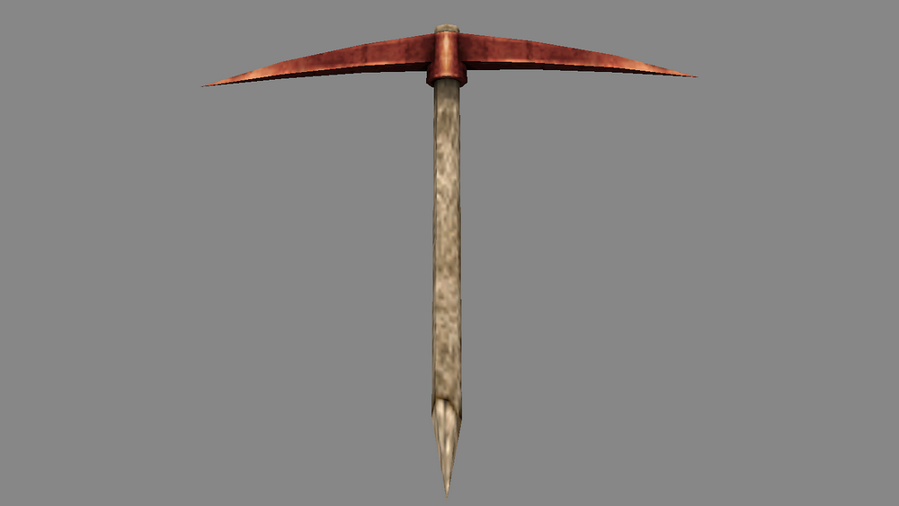
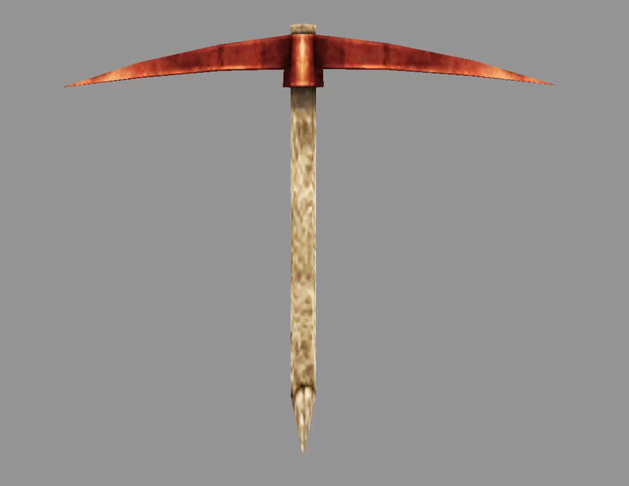
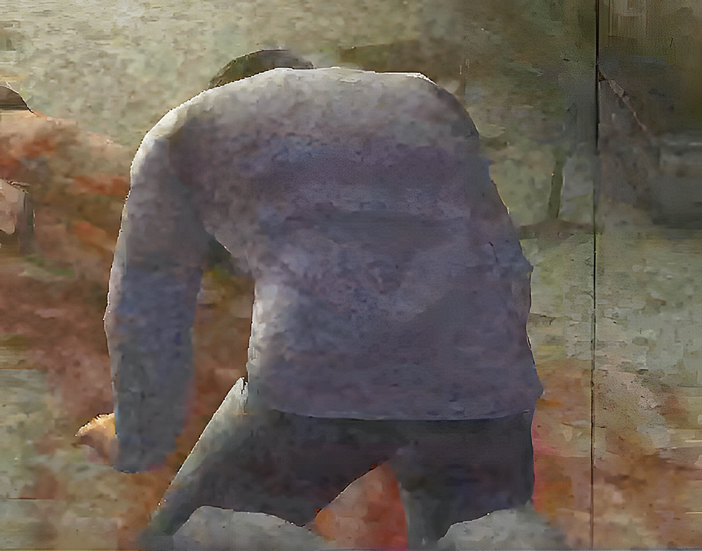
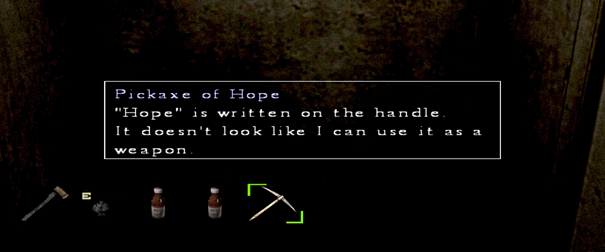
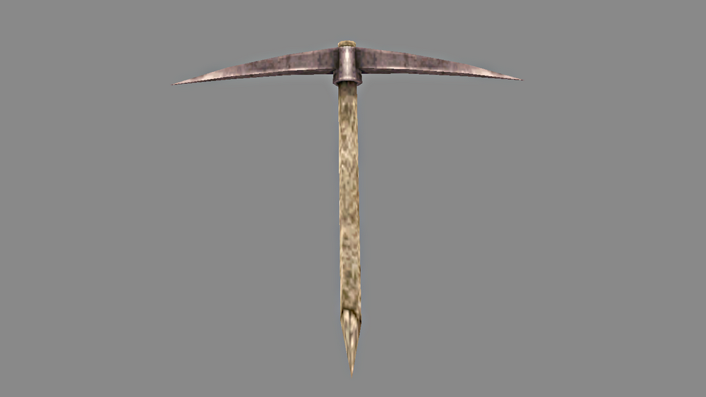

[SH4] Pickaxe of Despair

"Despair" written on the handle?!
This is a mirror of the DeviantArt version linked above, provided as a backup and for easier access.

The description of this pickaxe said that the handle has "Despair" written on it, so I wondered—does it say "Despair" in English, or is it actually the Japanese "絶望" ? Either way, it sounds lame, haha.

So I moved Henry around all over the place and checked the texture to see where it was.

The smudges almost look…ed like... the word… "despair"… No… no…

It wasn't there…


It's just a pickaxe, Henry. You've been tricked! In a way… so this is what despair feels like...

By the way, the word for "hope" isn't written anywhere in "Pickaxe of Hope" either...


I can't believe neither of them is written there. That's cheating!